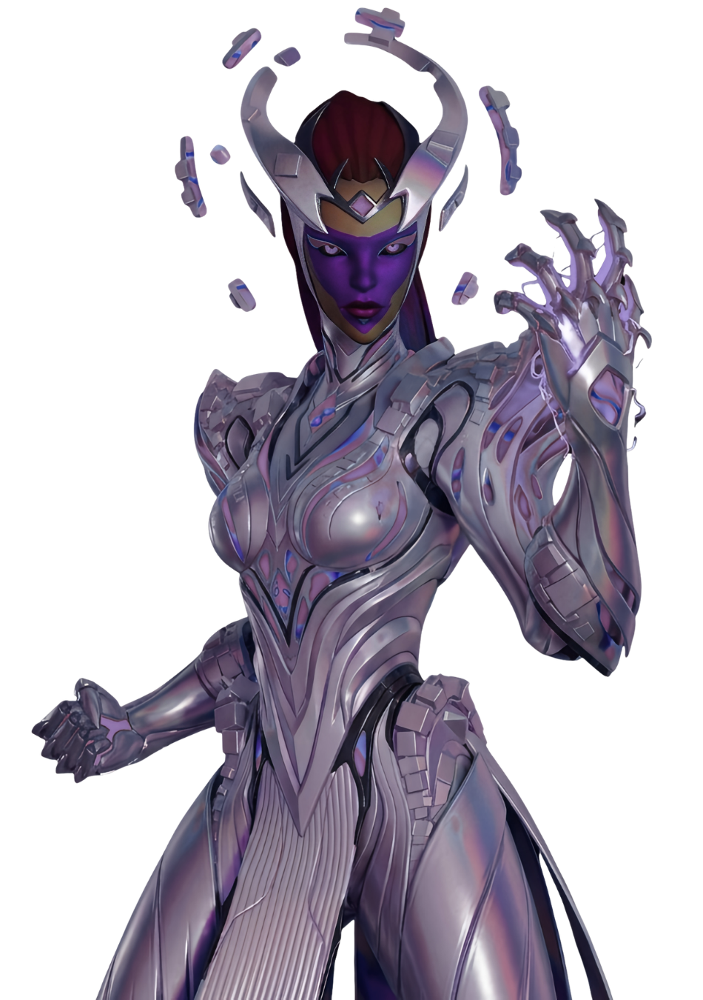
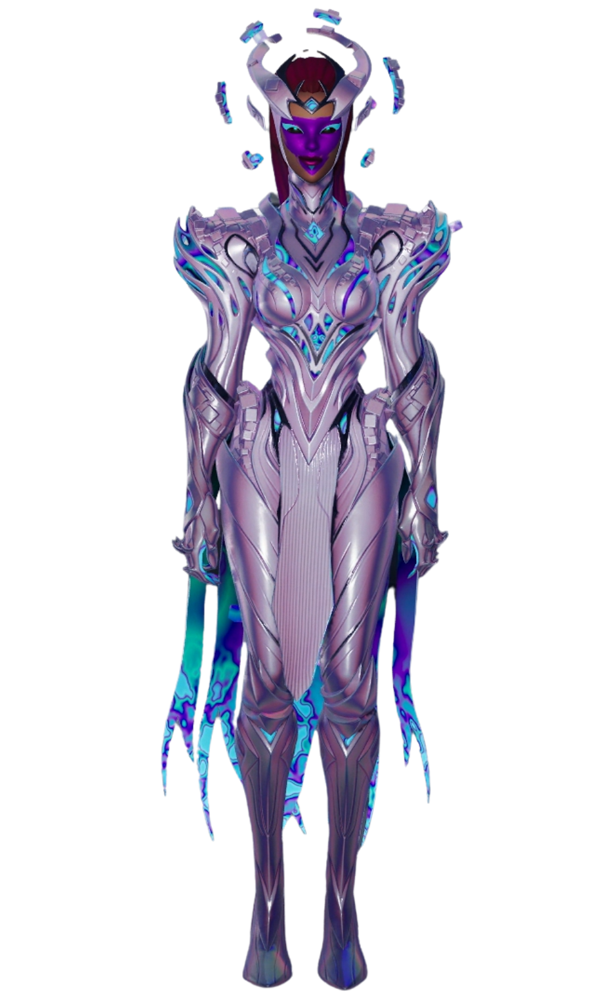

Reine Cube
// Archives Biographiques
Souveraine de l'Ultime Réalité
Monarque impitoyable à la tête des armées de l'Ultime Réalité, la Reine Cube est une entité cosmique dont le seul but est de consumer l'omnivers. Descendant d'un gigantesque vaisseau doré avec un regard vide où se lit le Néant absolu, elle déchaîne sa foudre dorée pour ériger une titanesque convergence sur l'Archipel Ultime. Après avoir invoqué des hordes de monstres cauchemardesques pour écraser le Clan du Soleil, elle déchire le ciel afin de faire déferler son armada destructrice. Son règne apocalyptique s'achève brutalement lorsque les Sept s'unissent dans une frappe désespérée pour éventrer son vaisseau amiral en plein vol. L'immense carcasse métallique s'écrase alors sur elle, la pulvérisant sous les décombres de sa propre flotte.
// Variantes Visuelles
